FSDXA Comoros DXpedition
(2001.Feb.08-28)

FSDXA Comoros DXpedition
(2001.Feb.08-28)
|
◎ LondonからComorosへ D68Cの先発メンバーの一行は2月4日の夕方、Air Mauritiusでロンドン・ヒースロー空港を出発。 約13時間後の翌5日の早朝、時差=UTC+4時間のモーリシャス(3B8)に到着。 ここで一泊した後、翌6日の昼過ぎにTanzania航空でコモロ(Comoros)入り。 コモロはモーリシャスからマダガスカル(5R8)を横切って戻る感じになるので、時差も戻ってUTC+3時間。 英国経由で参加した他国のメンバーは、本国からのフライト時間も加わるのでかなりの長旅となった。 コモロは島の南寄りに茶褐色の溶岩で覆われたかなり高い山があり、首都のモロニ(Moroni)はこの山の西側の海岸に位置している。 空港はこのモロニから北に10Kmほど離れた場所。D68Cの運用場所となったGalawa Beach Hotelは、 空港からさらに北に15Kmほど離れた島の最北端にある。 コモロは椰子の木が生い茂り、一見緑豊かな島に見えるのだが、実際には火山の島で茶褐色の溶岩の流れ出した痕は海岸線まで続いている。 このごろごろした溶岩で覆われた地面は、われわれのアンテナ工事の作業を遅らせる一因となった。
|
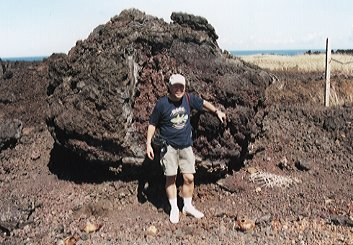
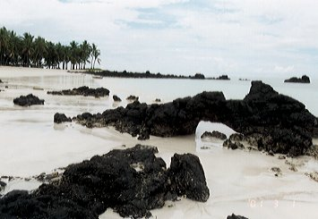
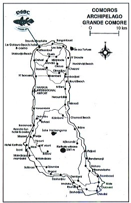
|
◎アンテナ建て ホテルに到着後、休む間もなく大型コンテナで英国から運ばれてあった機材の運搬が始まった。 40度を超す炎天下に置かれてあったコンテナの中からアンテナ、Rig、作業材料などを取り出し、 200mほど離れた運用場所のコテージまで運搬する作業は、真冬のロンドンから着いたばかりの暑さに慣れていない身体にはキツイものだった。 1.5リットル入りのミネラルウォーターを片手の作業もあまりの暑さで中断、アンテナ建ては日の傾く夕方から行うことにして全員休憩。 アンテナの建設場所は溶岩石で足場も悪く、暑さと疲れで初日から"フラフラ状態"だった。 |
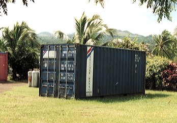
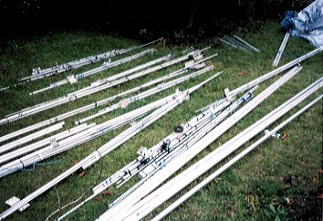
|
翌7日は朝から大雨の降る悪天候。雨の上がるのを待っていたら"仕事"にならないので、ドシャ降りの中でアンテナの工事が始まった。
日差しが無い分、暑くは無いのだが下着から靴の中までビショ濡れになり、これもまた辛いものだった。
"水のシャワー"を浴びている状態が長く続くと、赤道直下のコモロとはいえ最後は寒さを感じるほどに冷え切ってしまった。 8日は午後から天候も回復、アンテナ工事も一段落、いよいよ2月9日00:00zからの運用開始が決まった。 |
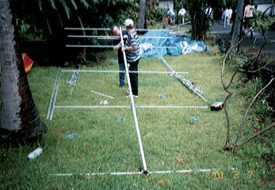
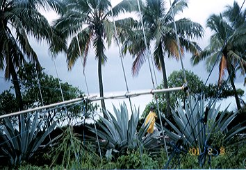
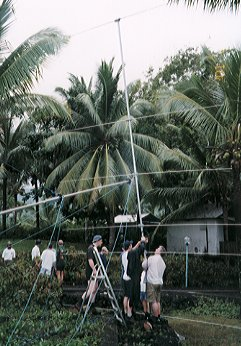
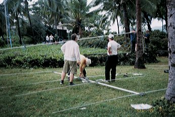
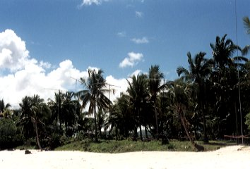
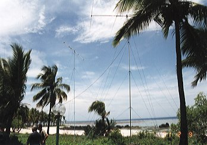
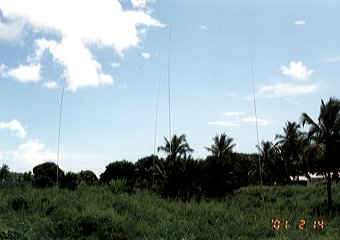
|
◎マラリアの恐怖 コモロは今でもマラリアの危険地帯で事前に予防接種などの対策が指導されているところ。 このため、蚊が出てくる夕方からの作業や運用には長袖、長ズボン着用の指示が出され、防虫スプレーを頭から吹きかけて"蚊除け"の下準備。 日本でコモロのビザを取得する条件に「黄熱病」の予防接種が義務付けられているので、 出掛ける前に指定された診療所でこの対策だけは済んでいたが、 マラリアの薬は「薬事法」の関係で日本国内では正規ルートで入手出来ない。 予防接種も出来ないため、事前の対策を何もしないでコモロ入りした"日本人"には、蚊の出現は"恐怖"だった。 診療所の看護婦さんの「虫に刺されない様にしなさい...」の言葉が頭をよぎる。 |
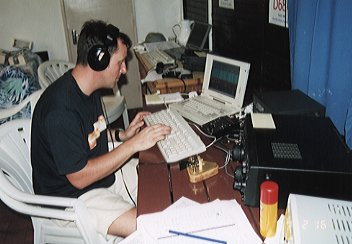
 |
D68C(1) Pedition |
 |
D68C(3) Operating |
 |
D68C(4) Comoros |
 |
D68C(5) Album |